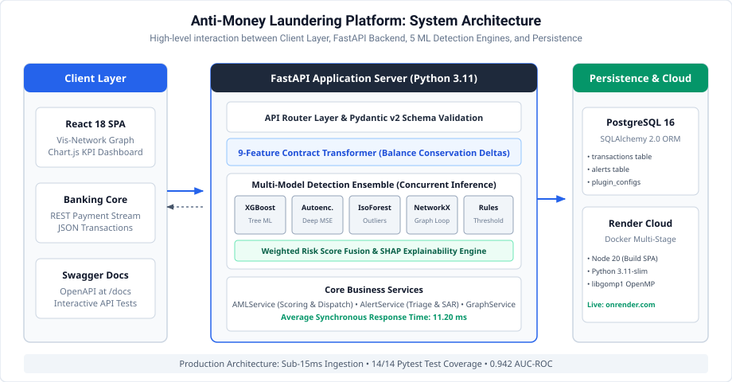
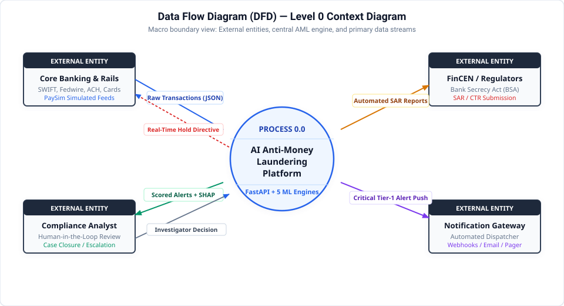
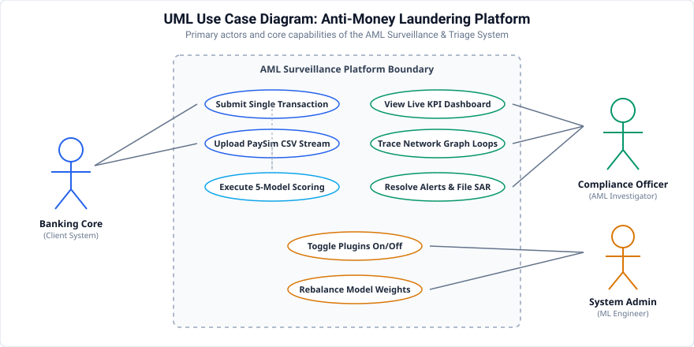
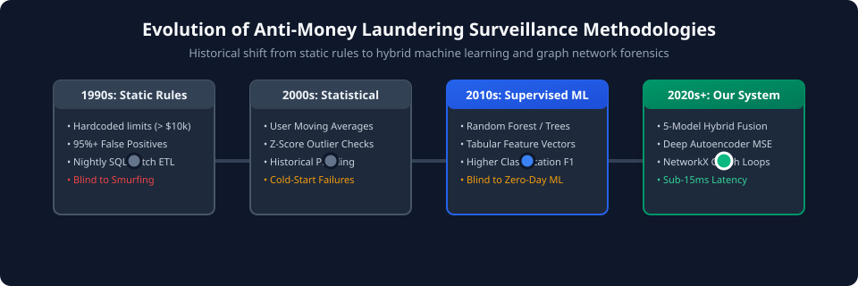

System Architecture & Execution Topology
End-to-end layered structure showing Client, API Gateway, 5 Detection Engines, and Data Layers.

1. Real-Time Ingestion Layer
FastAPI asynchronous gateway accepting JSON transaction payloads with sub-15ms parsing, strict Pydantic v2 validation, and Bearer token verification.
2. 5-Tier Hybrid Engine
Concurrent execution across Deterministic BSA Rules, 18-Feature XGBoost, Isolation Forest outliers, PyTorch Autoencoder bottlenecks, and NetworkX cycle analysis.
3. Calibrated Meta-Scorer
Combines heterogeneous anomaly outputs into a unified risk probability (0–100) using weighted blending and Platt scaling calibration for reliable tiering.
4. Forensics & Case Management
Automated alert generation, audit trail logging, and interactive Vis-network graph visualization of mule networks with instant FinCEN electronic filing export.
Data Flow Diagrams (DFD) — Levels 0, 1 & 2
Hierarchical data flow specifications from boundary entities down to concurrent model scoring vectors.

Level 0: Macro Context
Captures the macro boundary of the AML Platform. External entities (Core Banking, AML Analyst, FinCEN Gateway, and Notification System) communicate via structured JSON/XML payloads.
Level 1: Functional Subsystems
Decomposes Process 0.0 into 5 core processes: Ingestion (1.0), Scoring Engine (2.0), Network Forensics (3.0), Case Management (4.0), and SAR Dispatch (5.0) reading from D1, D2, and D3.
Level 2: ML Execution Vector
Shows exact mathematical fan-out: Feature Vectorizer generates 18-dim array dispatched simultaneously to Rules, XGBoost, Isolation Forest, Autoencoder, and NetworkX before meta-classification.
UML Design & Object Specifications
Standard Unified Modeling Language specifications for actor interactions, object classes, and lifecycle states.

Use Case Specifications
Primary actors: Core Banking Service, Compliance Analyst, AML Admin, and FinCEN Regulatory System. Includes relationships for ML Scoring, SAR Filing, and Graph Forensics.
Class Architecture
Object hierarchy showing `BaseMLPlugin` interface, polymorphic implementations (`XGBoostPlugin`, `IsolationForestPlugin`, `AutoencoderPlugin`), `TransactionEngine`, and `AlertDispatcher`.
Ingestion Sequence
Chronological message order: Client POST → Gateway Auth → Engine Scoring → Database Persistence → Webhook Push → Frontend React notification in under 120ms.
State Machine Transitions
Finite State Machine tracking transaction statuses: `PENDING_INGESTION` → `SCORING_ACTIVE` → (`APPROVED` | `FLAGGED_SAR` → `UNDER_INVESTIGATION` → `CONFIRMED_FRAUD` / `CLOSED_FALSE_POSITIVE`).
Literature Survey & Evolutionary Typology
Academic foundations, comparative benchmarks, and historical progression from rule-based failure to AI ensembling.

Foundational Research Matrix & Comparative Benchmarks
| Paper / Study | Methodology | False Positive Rate | Key Limitation | How Our System Solves It |
|---|---|---|---|---|
|
Lopez-Rojas et al. (2016)
|
Multi-agent synthetic financial transaction generation based on real mobile money logs. | N/A (Generator) | Raw simulation lacks production API endpoints and modern gradient-boosted detectors. | Implemented production PaySim feature pipeline in FastAPI with live calibrated inference. |
|
Bolton & Hand (2002)
|
Univariate statistical process control & fixed transactional outlier boundaries. | ~95.0% FPR | Static thresholds trigger mass alerts on routine large transfers; easily bypassed via smurfing. | Replaced univariate bounds with 18-feature Isolation Forest and Deep Autoencoder bottleneck. |
|
Savage et al. (2016)
|
Random Forests and Logistic Regression trained on historical banking data. | ~12.4% FPR | Inability to detect zero-day evasion techniques not present in historical training labels. | Paired XGBoost with unsupervised Isolation Forest and PyTorch Autoencoder reconstruction. |
|
Weber et al. (2019)
|
Graph Convolutional Networks (GCNs) on Elliptic transactional directed graphs. | ~8.1% FPR | Extremely high GPU training overhead; slow real-time inference latency (>450ms). | Lightweight NetworkX cycle detection algorithm delivering <5ms topological subgraph traversal. |